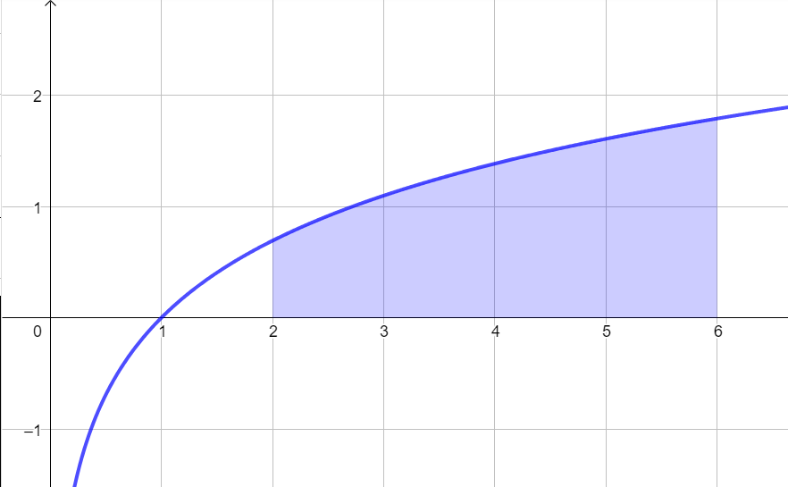
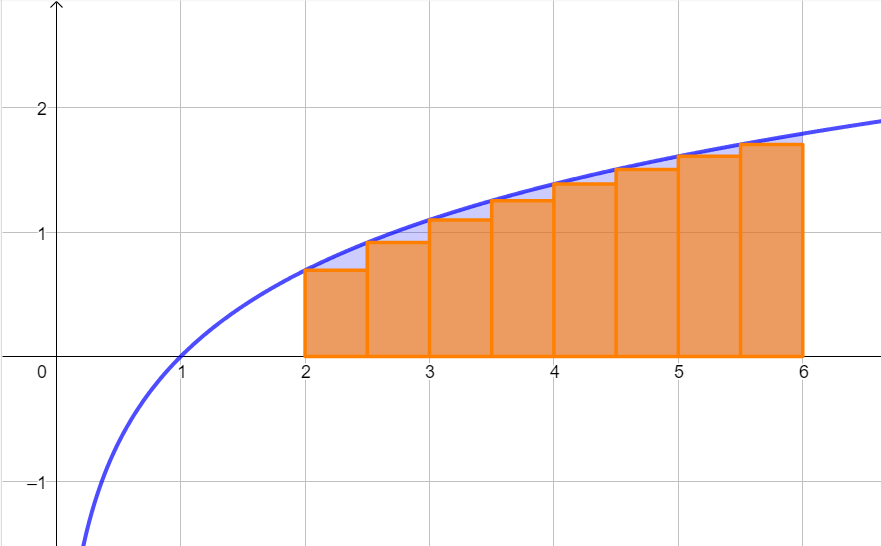

Il problema che ci ha condotti all'integrazione è quello della detemrinazione dell'area del grafico sotteso
al grafico di una funzione in corrispondenza di un intervallo \([a\,,\,\,b]\).
Indicheremo il valore di quest'area con il simbolo
\[
\int_{a}^{b} f(x) dx
\]
che si legge
\[
l'integrale\,\,di\,\,f\,(x)\,\,da\,\,a\,\,a\,\,b
\]

La strategia risolutiva che abbiamo adottato consiste nel procedere per approssimazione, cosiderando la somma dell'area di tanti rettangoli che
approssimino la figura inziale.

L'aspetto positivo di questo approccio è che l'errore che commettiamo nell'approssimazione diminuisce all'aumentare dei
numero dei sottointervalli nei quali ripartiamo \([a\,;\,\,b]\).
L'aspetto negativo è che il calcolo di un numero elevato somme diventa troppo oneroso dal punto di vista pratico.
Interviene in nostro aiuto un risultato talmente importante da meritare il nome di teorema fondamentale del calcolo integrale.
Data una funzione \(f\) continua in \([a\,;\,\,b]\) e detta \(F\) una qualsiasi primitiva di \(f\) si ha
\[
\int_{a}^{b} f(x) \,\, dx = F(b) -F(a)
\]
Questo problema mette in collegamento il problema del calcolo dell'area sottesa ad un grafico con il problema dell'individuazione
della primitiva di una funzione (integrale indefinito).
Di seguito riporto la spiegazione euristica di questo risultato.
Esercizio 0
Ripetere l'enunciato del teorema fondamentale del calcolo integrale;
spiegare il suo significato;
dimostrare il teorema esponendo in primo luogo l'idea fondamentale della dimostrazione (\(A'(x) = f(x)\));